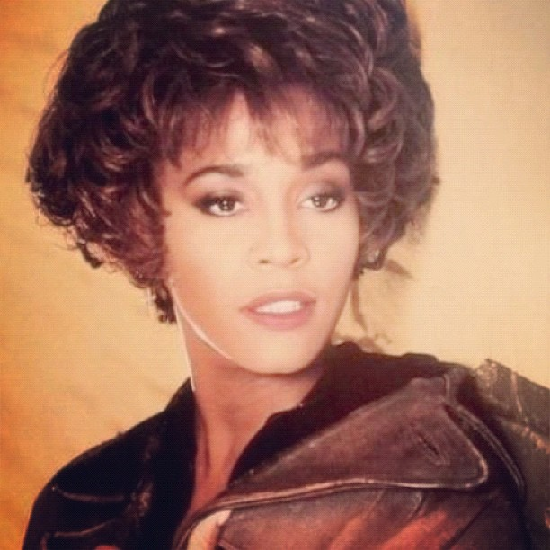

1983. It's Raining Men del duo The Weatherl Girl. Impossibile stare fermi. Come si fa a non ballare su questa canzone?
E si, stavo ballando. Sentiamola!
Foto licenza CCBY
Continuiamo a ballare con Whitney Houston e I Wanna Dance With Somebody. Che dire... canzone del 1987 che ha fatto scatenare un sacco di giovani e continua tutt'ora!

Foto licenza CC0
Kenny Loggins Footloose

Foto licenza CC0
Take on me a-ha. A chi non verrebbe voglia di fare gli acuti e farsi sentire dai vicini?
Foto licenza CC0
E per concludere... altro film da ballare! You! Me! Everybody! Dal film The Blues Brothers Everybody Needs Somebody to Love.
Foto licenza CC0